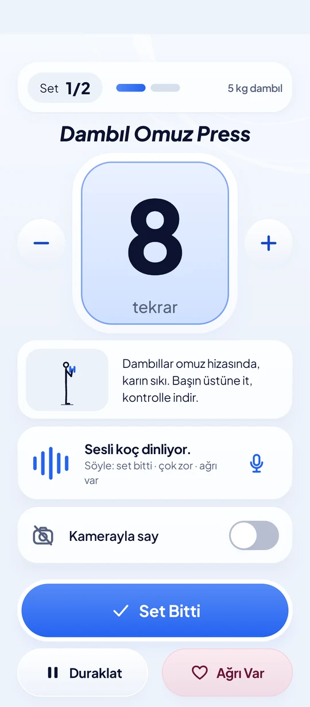
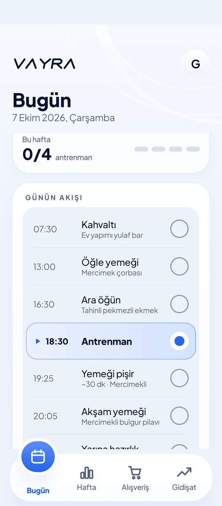
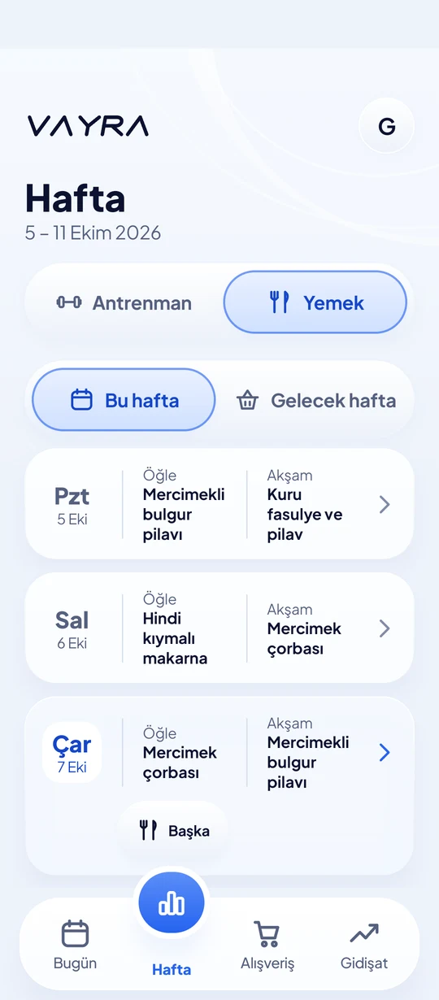
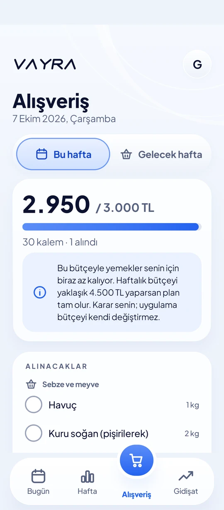
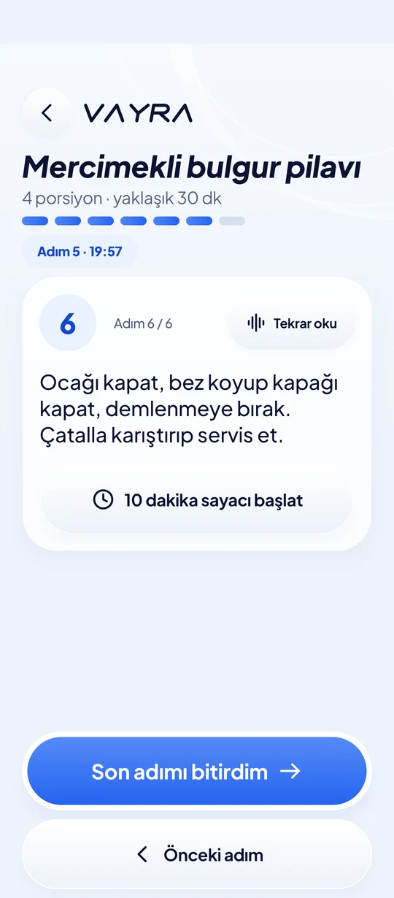
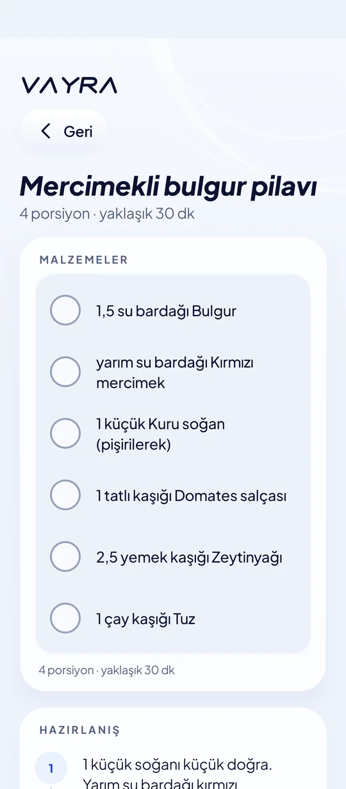
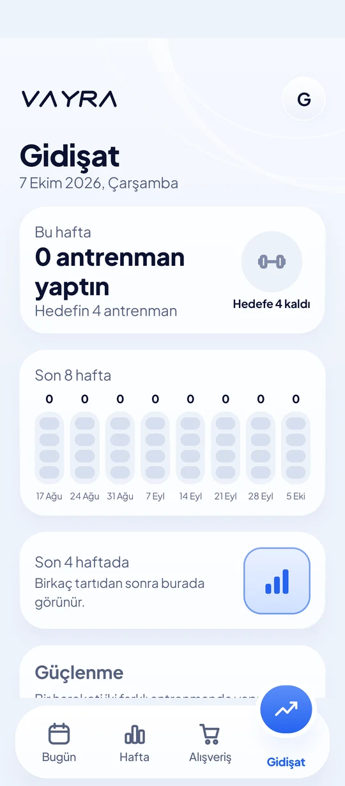

Antrenman akışı
Büyük tekrar sayısı, tek dokunuşla “Set Bitti”, dinlenme sayacı ve her an erişilebilen “Ağrı Var” düğmesi. Zor ya da kolay geri bildirimin bir sonraki seti ayarlar.
VAYRA, evde antrenmanı ve yemeği tek akışta toplar. Setini sesli koç yönetir, tekrarını kamera sayar, haftanın yemeği ve alışverişi bütçeyi aşmadan hazır olur. Sen sadece sıradaki şeyi yaparsın.
Herkese açık değil. VAYRA, Google Play’de özel test olarak dağıtılır: yalnızca davet edilen e-posta adresleri indirebilir. Nasıl çalışır?


Çoğu spor uygulaması sana bir sürü seçenek verir. VAYRA tersini yapar: o an yapılacak tek şeyi gösterir.
Tekrarı koç söyler, kamera doğrular. Sen sayıyı değil hareketi düşünürsün.
Antrenman, yemek ve bütçe kararlarını uygulamanın kuralları verir; yapay zekâ bu kuralların üstüne çıkamaz.
Bugün ekranında tek büyük kart var: şimdi antrenman mı, yemek mi, hazırlık mı, dinlenme mi.
Her şey telefonda çalışır. İnternet kesilse de antrenman ve yemek planı devam eder.
Büyük tekrar sayısı, tek dokunuşla “Set Bitti”, dinlenme sayacı ve her an erişilebilen “Ağrı Var” düğmesi. Zor ya da kolay geri bildirimin bir sonraki seti ayarlar.
Antrenman başlarken, yeni harekette, sette ve dinlenme bitmeden konuşur; sen konuşunca hemen susar. Kendi Gemini anahtarınla çalışır, anahtar yalnızca telefonunda şifreli durur.
Telefonu karşına koy; vücut çizgin ve tekrar sayın canlı görünür. Görüntü telefondan çıkmaz, kaydedilmez. Yanlışsa −/+ ile düzeltirsin.
Her gün öğünlerin hazır. Kişisel alerji ve tercih kuralların kilitlidir: yasak bir malzeme plana hiçbir zaman girmez. Cuma akşamları makarna gecesi.
Liste yediğin yemeklere göre kendiliğinden güncellenir, evde kalanları bilir. Haftalık tahmini toplam, belirlediğin bütçe tavanını asla aşmaz.
Adım adım, istersen sesli okunan tarif. Birden çok sayaç aynı anda çalışır; süre dolunca titrer ve “Süre doldu” der. Pişirirken ekran açık kalır.





Uygulamayı iki kişi paylaşır. Girişte e-posta ya da şifre yok: kendi renkli kartına dokunursun.
Kendi planı, kendi sesli koçu, kendi ölçüleri.
Kendi planı, kendi sesli koçu, kendi ölçüleri.
Alerji, doktor kısıtı ve ağrı durdurma gibi güvenlik kuralları sabit koddur. Koç da, plan da bunları aşamaz.
Keskin ağrıda uygulama seti durdurur; asla “devam et” demez. Teşhis koymaz, tedavi önermez.
Reklam, izleme ve analiz yok. Kamera görüntüsü kaydedilmez. Ayrıntılar için gizlilik politikası.
VAYRA bir spor ve beslenme yardımcısıdır; tıbbi cihaz değildir. Ağrı ya da sağlık sorunun varsa bir sağlık uzmanına danış.
Dışarıdan yüklenen (APK) bir uygulama Android’de “doğrulanmamış” sayılır; Play Protect yüklemeyi engeller ve bazı bankacılık uygulamaları da çalışmaz. Google Play’in özel test kanalı bunu çözer: uygulama Play’den gelir, güvenlidir ve yalnızca listedeki e-posta adresleri indirebilir.
Geliştirici Gmail adresini test listesine ekler.
Sana özel test bağlantısı gönderilir.
Bağlantıyı aynı Google hesabıyla açıp “Tester ol” dersin.
Play Store’dan normal uygulama gibi indirirsin; güncellemeler de oradan gelir.
Test yalnızca sınırlı sayıda kişiye açıktır. Gmail adresini draknorix.dev@gmail.com adresine yaz.